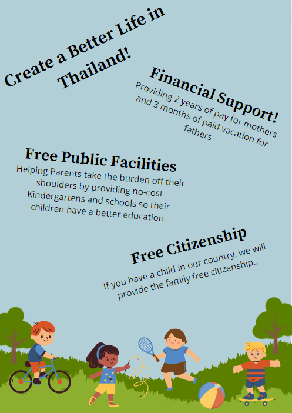

Atividades Obrigatórias
Miniquetes Digitais
Sobre a atividade: Essa atividade, feita no dia 5 de março, foi um trabalho em grupo, onde nosso dever era fazer uma pesquisa sobre um dos temas predefinidos, e analisar possíveis impactos que poderiam causar, expêriencias do grupo, entrevista e uma maquete dentro do jogo Minecraft. No nosso grupo, Eu, Miguel, Fabricio, Gabriel e João, fizemos sobre a energia.

Link para o Canva Link para o Docs
Estudo sobre a População
Sobre a atividade: Foi uma atividade realizada em um grupo de 5 pessoas, onde tivemos que responder algumas questões socioculturais e demográficas sobre o país escolhido, sendo respectamente, Suíça e Camarões.
Link para o Docs
Teorias Demográficas
Sobre a atividade: Nessa atividade Tinhamos que nos imaginarmos, como se estivessemos em uma campanha eleitoral. Nela precisavamos pensar em uma ideia para resolver a questões demográficas do país escolhido.
Link para o Canva